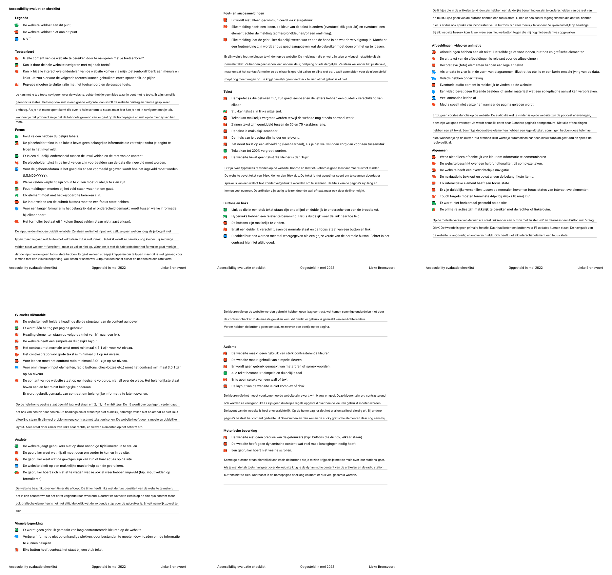
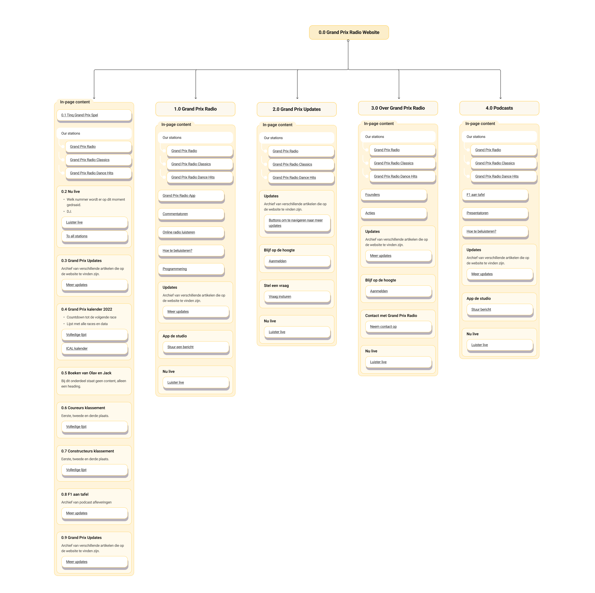
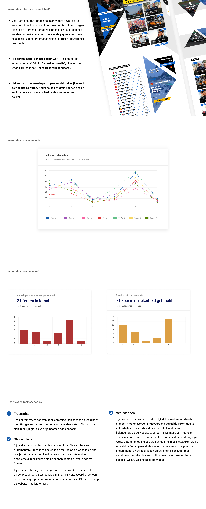
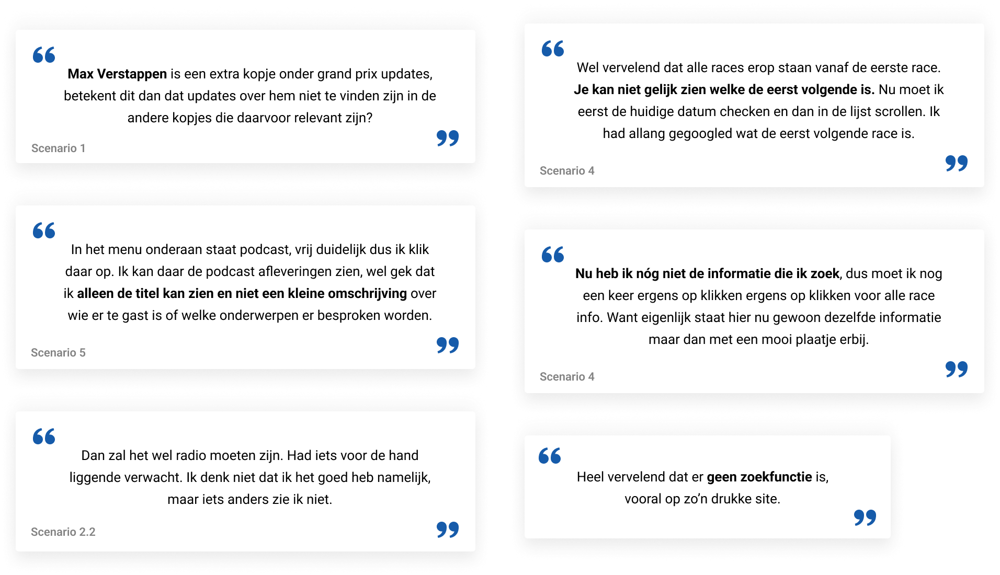
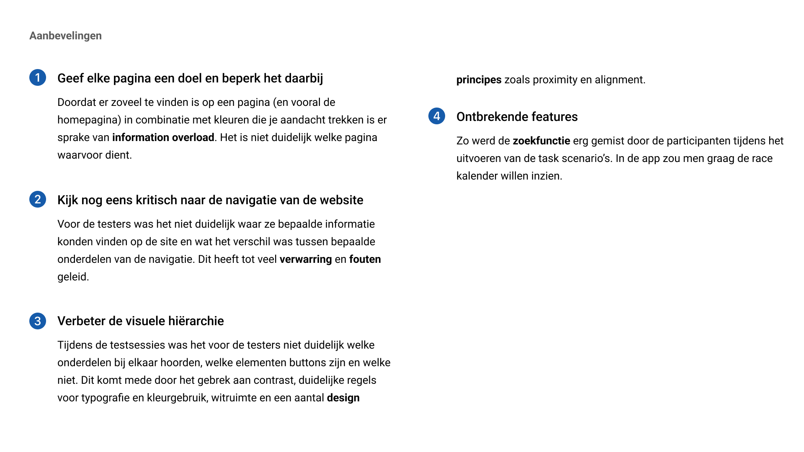

Grand Prix Radio
Toen Viaplay de rechten voor de Formule 1 opkocht, moesten we in Nederland afscheid nemen van het commentaar van Olav Mol. Dit heeft niet lang geduurd aangezien Olav Mol een app had ontwikkeld waarmee je toch naar hem kan luisteren tijdens de race weekenden. Echter liep ik tijdens het gebruik van deze app tegen een paar pijnpunten aan. Om inzicht te krijgen in de huidige functionaliteiten van de website besloot ik een UX audit uit te voeren. Deze audit bestaat uit een heuristieken- en accessibility evaluatie, de huidige sitemap en een usability test van de huidige website en app.

Heuristieken evaluatie
Tijdens dit onderzoek heb ik onderscheid gemaakt tussen de website en de app, aangezien ze niet dezelfde features en functionaliteit hebben. De belangrijkste bevindingen vat ik hieronder samen.

Afbeelding van de heuristieken evaluatie
Website
- De website is niet intuïtief, de pagina's hebben geen duidelijk doel. Ze zijn meer een verzameling van alle content die op de website te vinden is. Hierdoor voelt het erg chaotisch.
- Op dit moment is de snelste manier om erachter te komen wat buttons zijn door je muis over de pagina te bewegen. Een groot deel van de buttons lijken namelijk op headings en ze hebben niet allemaal een hover-state.
- De website bevat geen (succes)meldingen. De foutmeldingen die er wel zijn zitten in het contactformulier. Echter vallen deze niet op. Ze zien er hetzelfde uit als de rest van de tekst. Wanneer ik mijn e-mailadres invul om mij aan te melden voor de nieuwsbrief en op verzenden klik krijg ik geen succes- of foutmelding te zien. Ik weet nu niet of het gelukt is.
App
- Wat opvalt in het icoon gebruik is dat hier geen duidelijke richtlijnen in zijn. Het ene icoon ziet er heel minimalistisch uit en de ander weer heel gedetailleerd. Ook komt de lijndikte van de iconen niet overeen.
- Het duurt een poosje voordat de podcast begint met afspelen wanneer je op de play knop hebt gedrukt. Niet ontzettend lang, maar wel lang genoeg om je af te vragen 'gaat dit wel goed?', 'het werkt niet'. Maar dan doet hij het ineens en besef je dat hij aan het laden was. Echter wordt dit niet gecommuniceerd, waardoor de gebruiker in onzekerheid zit.
- Onder in de navigatie wordt aangegeven op welke pagina je zit door middel van een blauwe balk. Deze valt echter niet heel erg op doordat het een kleine balk onderaan je scherm is. Als je een iPhone hebt overlapt deze ook bijna met je balk die standaard op elk scherm zit om terug te gaan naar je home screen.
Accessibility evaluatie
De volgende stap in deze UX audit was het onderzoek doen naar eventuele toegankelijkheidsproblemen. Ook over deze evaluatie ga ik een korte samenvatting geven.
Afbeelding van de accessibility evaluatie
Inzichten
- Het is mogelijk om met je tab toets door de website te navigeren, maar het is geen prettige ervaring. Je hebt geen idee waar je bent doordat er bijna geen focus states zijn en je doorloopt de website op een rare manier. Als je het menu opent komt die over je hele scherm te staan, maar hier kun je niet in navigeren met de tab toets.
- Er wordt gebruik gemaakt van twee soorten fonts op de website: Roboto en Disctrict. De eerste is goed leesbaar maar District minder. De tekst is niet geoptimaliseerd om te scannen doordat er sprake is van een wall of text. De titels van de pagina's zijn lang en er zitten veel overeenkomsten tussen. Daarnaast zijn de artikelen niet fijn te lezen door de grote hoeveelheid tekst en de gekozen line-height.
- De headings op de website zijn niet duidelijk. Sommigen vallen niet op doordat ze niet links zijn uitgelijnd. Ook lopen de heading tags niet op volgorde van h1 naar h6. Er zijn veel contrast problemen en de website heeft geen simpele en duidelijke layout
Sitemap
Hieronder is een deel van de sitemap te zien van Grand Prix Radio, waarbij 0.0 de home pagina is. De rest is de hoofd navigatie. Wanneer je daarop klikt kom je op een pagina met onderstaande content. Deze pagina's bestaan uit allemaal linkjes naar andere pagina's die weer onder dat deel van de navigatie horen.
De sitemap is echt gigantisch, daarom is hier een klein deel te zien.
Usability test
Het doel van deze test was om feedback te vergaren over de (visuele) hiërarchie van de huidige website. En om mijn hypothese te verifiëren, namelijk dat er sprake is van information overload onder de participanten.
In het eerste gedeelte van de testsessie is er gebruik gemaakt van ‘The Five Second Test’methode in combinatie met een aantal vragen. Hierna moesten de participanten een aantal activiteiten uitvoeren; task scenario's. Tijdens het uitvoeren van de task scenario’s werd aan de participanten gevraagd om hardop na te denken, oftewel de methode 'Thinking Out Loud'.
Er hebben 7 mensen meegedaan aan deze sessie. Allemaal hebben ze affiniteit met Formule 1 of autosport. 3 van de 7 mensen waren vrouwen en 4 mannen.
Hieronder is het rapport te zien van de usability test.
 Een paar quotes uit de testsessie
Aanbevelingen
Aan de hand van de resultaten van alle onderzoeken, heb ik een aantal aanbevelingen opgesteld. Deze zijn hieronder te lezen.
